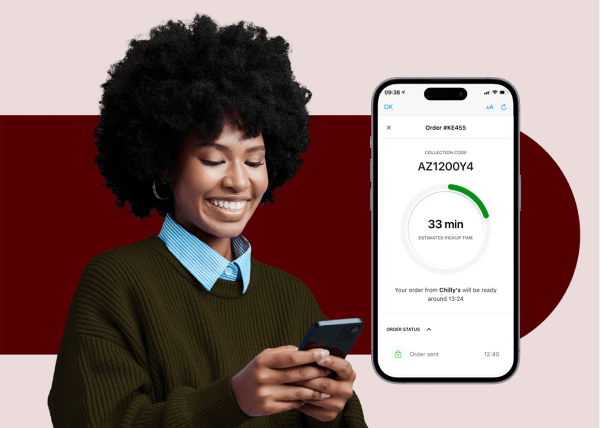

UX Design
/
Product Design
/
UX Research
Designing a Seamless
Order Status Feature
Order Anywhere — Lightspeed Commerce
Role
Lead Product Designer
Duration
4 months, 2022
Impact
100% task completion, 4.7/5 satisfaction